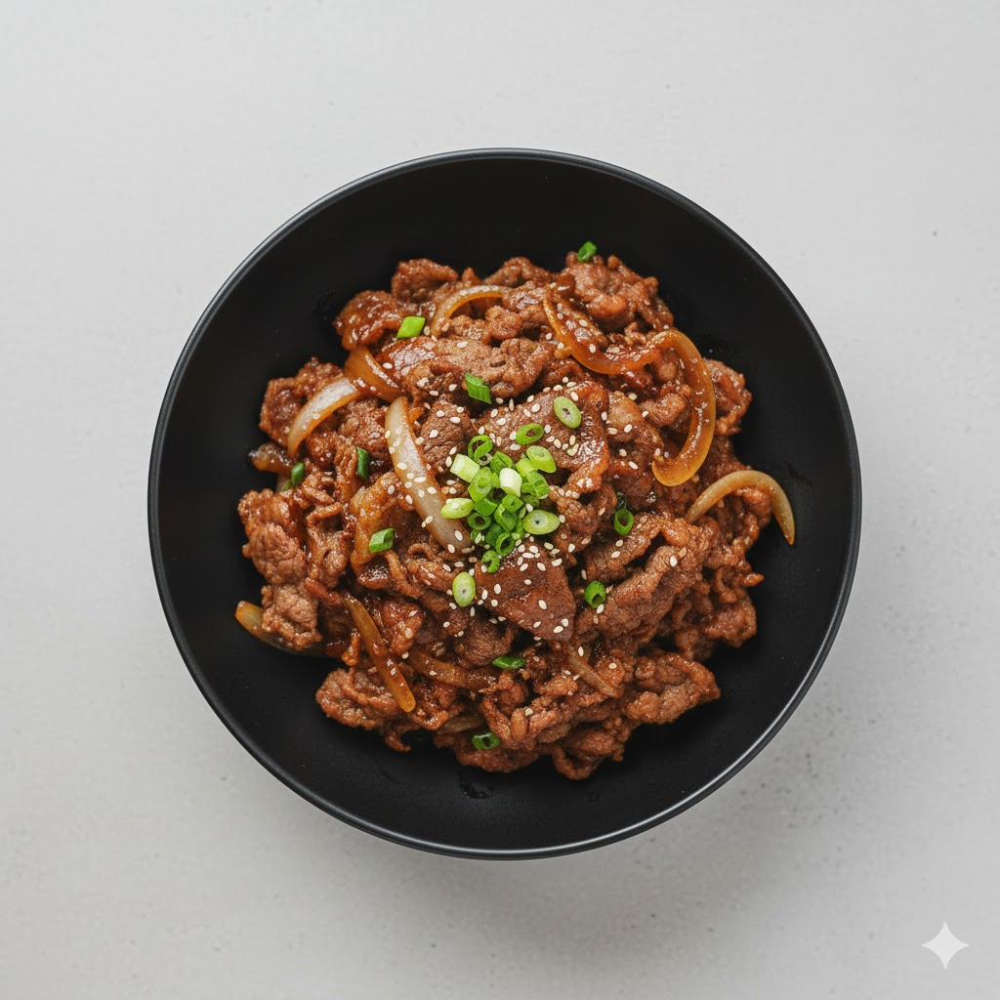

Bulgogi
Thinly sliced, marinated beef grilled or pan-fried, famous for its sweet and savory soy sauce flavor.
Ingredients
- 200g thinly sliced beef
- 2 tbsp soy sauce
- 1 tbsp sugar
- 1 tbsp sesame oil
- 1 tbsp minced garlic
- 1/2 tbsp cooking wine (optional)
- 1/4 onion (sliced)
- 1/4 carrot (thinly sliced)
- 1 green onion
- Sesame seeds
Instructions
- Mix beef with soy sauce, sugar, sesame oil, and garlic.
- Add onion, carrot, and green onion to marinade.
- Heat a pan on medium heat.
- Cook marinated beef until browned.
- Sprinkle sesame seeds before serving.